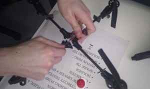
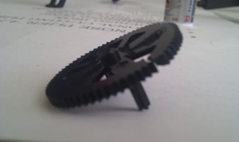
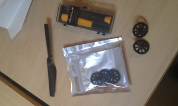
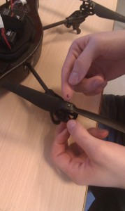
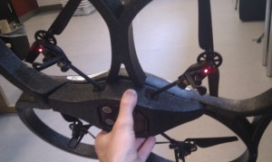

Category: Drone
Final words on the drone: merging previous work with new tasks
| August 23, 2011 | Posted by Michael under Drone, Ground robots, Ideas, Programming, Testing |
Comments off
|
Last automatic control improvements
What is wrong with our Proportional Integrative Derivative (PID) controller…
We have spent quite a good amount of time implementing, testing, tuning parameters and tweaking our PID controller over the last months. Our understanding of all its underlying theoretical aspects -mathematical, physical and computational- improved as much, and our results got generally better with time. Overall, we managed to get our drone to stay on top of a defined target, at a given altitude, without drifting much. However, our main concern was that, at some point, after a few minutes of running time, it would start describing circles around the target that would get bigger and bigger, or simply drift away. It was made clear that it was nothing due to our detection algorithm, but rather had to do with our PID.
And indeed, when we started to take again some hindsight and got back on all our results and data, we confirmed our very first doubts. PID controllers are great when you have to stabilize a system with one degree of freedom; more precisely, they are efficient when you need to work with one error parameter, which can be corrected by a set of actuators that do not have influence of any sort on other error parameters which also have to be regulated. Here, with our drone, we face a situation with three degrees of freedom (i.e. pitch, roll, yaw) that we try to stabilize toward our goal, and thanks to the very same actuators (i.e. our four rotors). Well, so far, we have not even tried to mess with yawing, since it was not absolutely required to achieve our project. Therefore, every time our algorithm needs to correct one degree of freedom, it is influencing the correction of the other, which needs then a better correction, and it goes on toward more and more instability, making it an explosive system.
This is the conclusion we eventually came to, and that is commonly admitted by other people working on this kind of system1. A solution has been researched to solve this difficulty, and a non-linear stabilization algorithm2, adapted to the four rotors design, seems to be the more appropriate. Solutions have been designed, implemented and experimented successfully3, on similar platforms. This is a vast field of study in itself, and could still use more investigation. Unfortunately, this calls for some long dwelling on the mechanics of the quadricopter, and would require to have independent access to each of the motors (with the API, we can only control movements at a higher level, by choosing the pitch, roll and yaw), and preferably on the embedded firmware, both of which being as for now not made possible by Parrot who designed our ARDrone.
Patching our PID controller with an auto-hovering threshold
Once again, we wanted to find our way toward our project’s goal by investigating our own solutions. As we saw it during the first experiment we performed at the beginning of our project, the embedded hovering function is pretty efficient in terms of stabilizing the drone. And stabilization is a feature we lack when our PID is reaching its zero-error point, since this is when it starts to “explode” by correcting parameters it should, due to small errors right on top of the target (our PID is nevertheless best at going right to the target, by adjusting itself progressively, without much overshoot, when the drone is further from its target).
However, we cannot rely on this hovering feature alone to track one robot, not to mention a whole flock of them. As a consequence, we thought about the following compromise: auto-hovering (i.e. stabilized hovering performed by an embedded algorithm we do not control) would be automatically activated when the drone finds itself in a circular area on top of our point of interest (the robot leader), whereas our PID controller would take control over the motor when outside of this restricted area (cf. Figure 1).
 |
| Figure 1: Illustration of the behavior of the drone. The green rectangle shows the 2D field of view (FOV) as it is projected on the ground for the vertical camera. As long as the error radius (distance between target and drone) is greater than a threshold, the drone is controlled by our PID regulator. Once it reaches this threshold, PID control is stopped and the embedded hovering algorithm takes over and tries to stabilize the quadricopter. |
|---|
By combining the best of both designs, we did achieve our best stabilization so far. Then, tracking a moving robot is also a task well-performed, which now completely fulfills the purpose of our drone, when added to the flock coordinate-reporting process. Yet we really lacked a bigger test-room setting, where our main concern was the low ceiling, preventing a long-term efficient robot-tracking, since it is really hard to keep even one robot in the camera field of view when you cannot fly comfortably higher than an average of 1,8 meters. Well, at least, that put some stimulating additional challenge into our tasks.
Drone and ground units: how our UAV is fully controlled
We have accomplished many tasks with our ARDrone, so it might not seem quite obvious what their purpose are in the scope of our project, to the point where one could wonder how we give it commands depending on which events. This part of our article focuses on a quick recap on all the implemented methods that enable the drone to do its required actions.
Auto landing and taking-off
Landing and taking-off are the only two stages of a whole flight over which we cannot have any control beyond sending commands to start either of those maneuvers. Once the drone acknowledges the command, the embedded software takes over the controls and operates it. Our custom algorithm never triggers these operations, which are decided by the person in charge of the drone who uses a specifically programmed controller (see part below).
Besides, safe landing may happen without our own input, in case of low battery.
Manual control
Even though most of flying time is managed by our custom algorithm which takes control over commands of the drone, we still need to be able to enter some user input at some point. The drone is first of all a rather flimsy and even sometimes dangerous flying object that could deal some minor damage to itself our its surroundings in case of bad handling: it is therefore necessary to have at least the capacity to quickly stop it completely in an emergency, or better, to switch back to a full human control in case of unwanted behavior. Moreover, since our algorithms are a lot about tuning parameters, it is advisable to enable on-the-flight parameter tweaking. The most appropriate way appeared to use a game controller that we would map to take advantage of all the sticks (great for moving the drone) and the different buttons (to give more custom orders).
Figure 2 shows the XBox 360 we chose and how we map its buttons to call different functions in our program. The following sums up our gamepad functionalities:
- Start or stop landing or taking off phase. This can be done at any time.
- Emergency stop, enabled at any time, to suddenly cut all four motors. Sometimes also required before a new take off to reset the drone’s state.
- Flat trim tells the drone that it is currently in a horizontal position: necessary for proper landing, take off and hovering – and should be done before taking off.
- Yaw, altitude, pitch and roll represent all degrees of freedom of the drone, split on two sticks. If our custom algorithm is disabled, then it is possible to control all the drone’s movements into 3D space in real-time.
- Start or stop custom algorithm enables or disables our control algorithm that will try to locate and track a leader on the ground, while reporting coordinates of all units in the flock to the leader.
- Viewpoint changes the camera viewpoint displayed on the user screen (switching between vertical, horizontal, or both cameras). While custom algorithm is enabled, you want and need to use the vertical camera.
- Stop program stops pretty much everything, except manual control.
- Start/stop hovering disables custom algorithm and manual input to activate the embedded function that stabilizes the drone. It comes of great use when you just need a stable hovering drone that does not move much.
- At last, you can select PID parameters, one after the other, and change them.
| Figure 2: Finally, this is how our controller is mapped. We get with it an absolute control over all the possible actions of the drone in real-time, on top of lots of ease to tune our parameters during running time. Note that this should work with any other generic controller (at least remotely compatible with Linux). |
|---|
Algorithm control
By a simple button press, one can enable our disable our custom algorithm. But what exactly does it encompass ?
Double PID
We have a double PID controller affecting three degrees of freedom, in order to stabilize two behaviors:
- a constant altitude, that we want to be set (by default) around 1,8 meters. This is done through the
gazcommand. - tracking the leader, and hovering on top of it by detecting its tag. This is done through the
pitchandrollcommands.
More details are provided in the first part of this article and in previous ones: 1, 2.
Tilt handling
Coordinates of the target to follow are corrected depending on the inclination and the altitude of the drone, before being fed to the PID loop. This problem and its solution are thoroughly discussed in a former article.
Detecting ground units and reporting their coordinates
Not only do we detect the tag that the drone has to track, but we also use our color object detection algorithm to report all coordinates of the whole set of robots to the leader of the flock.
This implies that it also handles a part of a network layer, while the program starts a thread that acts as a client connecting to the leader.
Change of tracked leader
The very last feature we needed to carry out in order to fulfill our main goals was to make sure we are tracking the right robot. Since all the robots are supposed to follow the leader, and the leader being controlled by a human user, it seems appropriate to track the unit targeted by the other units. This way, we make sure that the leader in always in sight, which enables establishing the rest of the formation accordingly. Furthermore, if a random unit were to get lost (out of the camera’s FOV), the leader, assisted by a human, could go looking for it; once it gets close to the lost unit, the latter becomes part of the formation again, since it is finally in the camera’s FOV.
We then had to establish a protocol to decide who is going to be the leader, how the drone gets this information and how it should respond to it:
- Leader number (
LeaderNumber, i.e. the id of the robot chosen as a leader) is decided on the flock side, usually by the human who controls the leader itself. LeaderNumberis passed to the drone’s program through the same client/server socket connection that is used for sending the flock coordinates. The drone has a thread continuously listening for new events on this socket, and registers the currentLeaderNumber.- Once we get this
LeaderNumber, the drone has to try to follow the corresponding unit on the ground. However, in some cases, the unit may not be in sight, or theLeaderNumbermay not even be decided yet. The logical steps that help the drone take the right course of action is detailed in the decision tree in Figure 3.
| Figure 3: Decision tree to find the number (id) of the robot leader and the drone’s action that should ensue. Hover means here simply hovering on the current spot, with the embedded stabilization algorithm. |
|---|
Basically, this means that we have added a new way to directly influence the behavior of the drone, by adding a input for the robot leader, on top of the human direct input with the gamepad and the algorithmic PID control.
Testing everything together
Our very last tests include all the above-mentioned features, that appear to work quite smoothly simultaneously, even when working with our flock of four robots. No unexpected behaviors were observed during our final experiments, so everything was pretty much already discussed in previous articles. The last part that was asking for testing consists in the leader switching task. Since our robot detection, our communication protocol and our drone hovering were already performing good separately, we did not have much tuning to do. Video 1 below is here to illustrate this performance.
| Video 1: The ARDrone is tracking two robots from our flock. Our flock-control program switches the “leader” (done manually here, for illustration purpose), i.e. the robot that leads the flock and that the drone is supposed to follow.So here, the leader switches back and forth between red and blue, and the drone moves accordingly and tries to hover on top of it.Hovering is not 100% steady. This is greatly due to a lack of altitude from the drone; our ceiling is too low to get a field of view good enough!For filming and testing purpose, it was necessary to focus on no more than two still units. Note that it however work as good as with more, moving robots. |
|---|
Videos and other more complete experiments will be to watch in our next article, where we deal with the whole flock and the drone.
References
- Dronolab, a quadrotor project involving mechanical, electrical and software engineering students. They moved from a PID controller to a more sophisticated one. http://dronolab.etsmtl.ca/uav/ [↩]
- Daniel Tabak, on a general digitally controlled system: An Algorithm for Nonlinear Process Stabilization and Control, 1970 [↩]
- A interesting thorough study on the design of an embedded control architecture for a four-rotors unmanned air vehicle to perform autonomous hover flight: Escareno J., Salazar-Cruz S. and Lozano R, Embedded control of a four-rotor UAV, 2006 [↩]
Image analysis: color detection for multiple robots
| August 17, 2011 | Posted by Michael under Drone, Programming, Testing |
Comments off
|
Introduction to our problem
Image analysis is nothing new in our project. We have already performed some by ourselves, using the vertical camera of the drone to track roundels on the ground. While this was a good solution, quite fast to implement and that did not required lots of tuning, it is no longer valid anymore when it comes to detecting more that one robot and differentiating all the units, since we were only considering a circular shape.
We might have tried to identify the robots by the size of their circle marker that could be different according to the id of the robot. It works in a very well-defined environment (steady camera, not too many, too small nor too close roundels); yet the camera is moving, even vertically, so the size of one roundel is never constant (thus making an absolute size detection impossible – i.e. attributing one specific roundel size to a robot’s id) and the resolution of the camera not good enough for that purpose, compared to the precision of the altitude sensor that could have help correct the size estimation depending on the altitude. Finally, some robots may not be in the camera’s field of view from time to time (thus making a relative detection impossible – i.e. guessing a robot’s id by observing that its circle is bigger or smaller than the one of its neighbor). The low resolution of the camera plays an important part in what we can or cannot do: while it is good enough for localization purpose of one point, it is not sufficient enough to tell the difference between different small variations of size for multiple objects that are around 20 centimeters big – besides, the more the robots are on the field, the higher the drone needs to be in the sky, and the harder it gets to achieve such an analysis.
 |
| Figure 1: Two of the markers installed on top of the omnidirectional robots. They are made of a brightly colored paper sheet folded into a polygon shape, with one angle providing a direction. Each shape is mounted on a LEGO support, of which one can notice the small “arms” going out of the polygons. |
|---|
So the solution has to be different in terms of the type of object we want to detect. Furthermore this type of object also has to enable a differentiation between many robots (up to ten if we want to be realistic given the system we have). Using the robot itself as an object to be detected is not doable, since all of them have the same shape, and the differences that we could physically build on them would be too minor to be noticed from the sky with our low-resolution camera. Moreover, a robot is a complex object from a camera point of view, and it is harder to detect a complex object with irregularities, holes, reliefs that spawn shadows, etc. than a simpler, flat one. Like we previously did with the roundel, we need a marker for each robot. Figure 1 shows the kind of marker we put on our robots.
We keep using the open source computer vision framework OpenCV to take advantage of its large number of already implemented algorithms and its C++ compatibility.
Solutions for detecting a marker
OpenCV provides developers with hundreds of algorithms that are designed to solve many problems, and often a dozen of implemented techniques might be applied to approach the same problem in different ways. Computer vision being only a fraction of what we learned and used as computer science students and interns, we cannot pretend to have an extensive knowledge of most of the possible solutions to our situation, hence our perhaps limited below suggestions that had to fit within the scope of our project. Our goal is to get a workable result that proves a concept – once this is done, if it only works with a defined set of robots and markers because of our lack of practice with image analysis and OpenCV, then we know that it could be improved to be fully made all-purpose with more time spent on the mathematical side of the algorithms and their implementation.
- Lukas-Kanade feature tracking algorithm1 that exploits the fundamental optical flow constraint equation. This methods tracks features points as they move from frame to frame. It starts detecting a group of features points in an initial frame and then tries to find them in the next frame, and keep doing so while updating from time to time the feature points. While this may be a valid solution with a static camera where only the robots are moving, it will surely be harder if not impracticable with a moving camera and moving robots.
- Mixture of Gaussian method2. It is basically an algorithm that extracts foreground objects in a scene while also coping with the problem of a moving background object (like tree leaves) or a glaring effect, thanks to sophisticated additions (e.g. the running variance is also considered on top of the running average for a model – so more data are kept and analyzed). This might be used in our case, even with a moving camera, but this would means that we make sure to keep flying and moving over a regular, flat, featureless and uni-color/pattern ground.
- Template matching method. It enables the detection of a specific pattern or part of a bigger image by looking for matches between the analyzed image and another, smaller image – the template, that contains the object we are trying to find. It does so by sliding the template over the image, going from the top left to the bottom right corner. The drawback of this solution is that is does not automatically take possible rotations of the object to match into account, nor does it consider the scaling of the object that changes depending on the altitude of the camera. Implementing those additional treatments would be possible but may be tedious and likely hardly efficient in terms of complexity (a naive algorithm would have to consider all the possible orientation over 360 degrees, on top of different template sizes…). Yet, if done correctly and providing a well thought template, this may become a really elegant solution, because it would rely on a bare minimum of external environmental factors.
- Color detection and tracking looks for specific colors in an image. This methods removes all the colors that are not wanted, so as to only keep the color we need to locate, by applying different color filters on each image. This is frame-independent, i.e. it does not require to keep a trace in memory of what happened before, which is a positive aspect since frames may have almost nothing in common depending on the movements of the drone. This is however a surrounding-light sensitive solution, which means that results will vary depending on the daylight and lights that are turned on. So tuning might be often required before a new experiment.
Chosen technique
We have chosen tracking by color object detection, since this is a solution we knew could be implemented quickly with fair results. It may not be the best because of its important drawbacks, but our setup is such that those are mostly insignificant: we work in an office where light conditions greatly depend on ceiling lights, so we can keep a nearly constant lighting environment at all time. Besides, we do not need to track more than a few couples of robots, which mean that we can choose quite easily colors sharply contrasting with each other. Yet we are aware that this is no sustainable solution if we were to implement it on a greater scale in a different environment like outdoors, but image analysis is only one of our many concerns in this project, not our focus – so we could not afford to spend six months working on this topic alone.
On top of that, we also learnt from other fellow students from Aarhus University, who faced a similar problem with an “eye-in-the-sky” static camera tracking two ground robots in real-time. They investigated many possible solutions and eventually disregarded all of them to choose the color detection. Yet they paid close attention to some of them, by even selecting first the Haar Classifier Cascades, that they did implement. However, this is an algorithm based on Machine Learning that requires a lot of “training” time, and performed badly in their setup, with unworkable results. Since our working environment is almost the same as theirs, with the same kind of hardware that is visually complex (LEGO studs are seen during the training of the machine with clear, clean pictures, but the video stream is much more noisy, and in our case even distorted by the inclination of the drone – so the same pattern on a picture may not be recognized in a video), and with the same software library OpenCV, it made a lot of sense to follow their track and try to build on what has been already done. All the details are available in their labreport3.
This academic work, a recipe book for OpenCV4 and lessons from our former professor of image analysis5 provided us with plenty of inspiring ideas and practical ways to implement them.
Color object tracking
Method and implementation
As an aside, please keep in mind that our following explanation may be best understood by looking into our commented source code at the same time, available in our Link & Downloads section. The most relevant file for the problem we analyze here is ColorMatcher.cpp (in folder drone_app_code_sdk_1.7/application/Source/ColorMatching).
Tracking a given object usually requires to proceed in two major distinct steps:
- Identify the object, by producing a binary image showing where certain objects of interest could be located. This can for instance be done by histogram back projection or by motion analysis.
- Extract the objects contained in this binary collection, i.e. extract the connected components (shapes made of a set of connected pixels in a binary image).
Then it is a good practice habit to display some graphical information on the video stream so the user may visualize how the algorithm performs.
Analyzing a video signal is pretty much similar to analyzing a single picture. Video signals are made of a sequence of images called frames, that are taken at a regular pace, the frame rate. Once the individual frames of a video have been extracted, methods to analyze them are no different from those applied to pictures, and the results are the same, as long as we do not overdo too much heavy processing to keep up with the frame rate.
So for the remaining of our explanation, we do as though we deal with a single frame, given that we then repeat the same process forever (as long as the drone is running). Note that each frame is temporarily copied into another memory location: the copy will be analyzed by our algorithm, while the original will have some graphical information drawn on top of it every time we go through one loop for one color and we identify a color. If this is not done, then the drawing interferes with the detection algorithm, since it is then part of the frame. The original frame is shown to the user, while the copy is deleted once all the color have been tracked on the current frame.
Identifying the colors
We try here to track the markers presented on Figure 1. Since we are only dealing with color matching in a first time, we pay no attention on any other characteristic of the marker (neither the shape nor the orientation are relevant).
Basically, when the program is launched, it is initialized with some static configuration that provides the parameters needed to identify each robot. To keep the matter simple, we therefore have one robot associated with one range of color values, in a one to one relationship. During our further explanations, we will deal with only one robot/color, since the process is repeated in the same way for every other color (the difference being the values of the parameters passed to our function).
For one color, we create a temporary color mask that is going to be our binary image required for the next step. It first starts as an empty data structure of the same dimension as the original frame.
IplImage* colorMask = cvCreateImage(
cvSize(
frame->width,
frame->height
),
8, // image type (8 bits image)
1 // one single channel
);
Then we apply the following method on our frame:
cvInRangeS(frameCopy,
cvScalar(robot->B_val_min, robot->R_val_min, robot->G_val_min),
cvScalar(robot->B_val_max, robot->R_val_max, robot->G_val_max),
colorMask
);
cvInRangeS extracts all the pixels that are in the color range defined by the second and third parameters [lower and upper bound of the interval] and gives them a binary value of 1 that will be stored in the colorMask matrix, while all the other filtered-out pixel get a 0 value. A color is defined here by its Red, Green, Blue (RGB) composition, thus we need to specify three value for each bound of the interval. Therefore, one can assert that a robot is completely defined by 6 values.
Extracting the objects
From now on we have our binary data structure filled, which we can use. Another temporary data structure is needed, that is going to hold a vector of contours. Initialization is done as follows:
CvMemStorage* storage = cvCreateMemStorage();
OpenCV offers a simple function to extract the contours of the connected components of an image:
int numberOfContours = cvFindContours(colorMask, // our binary image from step 1.
storage, // a vector of contours
&first_contour // a pointer to the first contour found
);
The input is our binary image previously obtained. The output is a vector of contours, with each contour being represented by a vector of CvPoint. The extraction is performed by an algorithm that systematically scans the image until a component is found. Then, it follows its contour from this starting point while marking the pixel on its border. Once the contour is fully found, the scanning resumes at the last position until it finds a new component.
Then, we filter out some of the components we are sure we want to be eliminated, using some prior knowledge about the expected size of the object of interest. We therefore discard all the components whose bounding box is smaller than a defined size. A bounding box is the most compact way to represent a component in an image, defined as the upright rectangle of minimum size that contains the shape entirely. It cannot provide more information than the location of the object and an approximation of its size. That is the easiest structure to use for us, and is created in our code like this:
cvRect bound = cvBoundingRect(storage[0], 0)
However, filtering all the small bounding boxes revealed to be insufficient to get eventually one unique box that could be identified as the wanted color/robot, because of some unexpected light noise that might appear on one frame or another. Hence our decision to only keep the biggest one (the noise is usually not covering a surface bigger than the robot itself).
Displaying the objects
Finally, we draw all the bounding boxes we found on our original frame, except for those that are smaller than our threshold, as it displayed on Figure 2. Then we add a marker (a circle and a tag name) on what we consider to be the actual robot, that is, the biggest rectangle (cf. video 1 or Figure 3 for an illustration).
Once our analyze is done for one frame and one color, we obviously do not forget to reset and release the temporarily allocated memory chunk to avoid a memory overflow that can happen really quickly when it comes to deal with a video signal:
cvClearMemStorage(storage); cvReleaseMemStorage(&storage); first_contour = NULL; cvReleaseImage(&colorMask);
We also draw a direction vector that make averages on the last ten registered positions for each robot, so we can get a new information on the overall direction of a unit.
Obviously, while drawing our bounding boxes, we also update the corresponding robot structure with its newly found coordinates. We convert the matrix coordinates into real measurements by applying the same calculations that we already did with the drone and one roundel6 (it basically consists in multiplying our value by a MAPPING_SCALE parameter that depends on the altitude of the camera and its Field Of View angle). Automatically, the new position of the robot is sent to the server that manages the flock.
 |
| Figure 2: Detection of multiple objects at the same time. This is our main interface that enables us to test and see what happens in real-time, by providing tools to tune parameters “on the go”. The left window is the user input interface, the top right window displays the video with a matching colors overlay, and the small bottom right window currently displays the extracted contours corresponding to our red color. |
|---|
The Graphical User Interface provides the user with some liberty in adjusting the parameters in real-time:
- Field edge size is the size of the virtual border all-around the image that triggers a specific signal once a robot is in its boundaries. This is later used by the server and the leader that will try to prevent robots to escape the field of view as often as possible.
- Cam distance is the distance from the camera to the ground. This is actually only used with a webcam on the ceiling (see below), and is updated automatically when the drone is used (thanks to its sensors).
- Position filter threshold is the minimum distance that has to be between two components before considering them as two different objects.
- Bound min size is the minimum size of one side of a bounding box so that its inner component is considered as a potential robot.
- Smoothing (Gaussian) applies a filter that blurs the image. This is a convenient way of getting rid of noise inside frames that has otherwise a tendency to produce lots of small, scarce components. It is thus practically always kept active.
- Require convex shapes can be activated to disregards all the components that are not convex. Given the lack of absolute precision in the detection, it is rare that components are always perfectly enclosed object, so this is probably too selective a parameter.
- Socket I/O enables or disables communication with a server. (more about that feature in our project’s report)
- Video opens a window that displays the video signal in real-time, with the graphical overlay.
- Log is used for debugging: if activated, it prints debug and information messages in real-time into the console.
- PanelR# opens or closes the settings window for a given robot. This new panel allows the user to change separately one of the 6 color parameters (i.e. the RGB interval boundaries), in real-time. It also enables another video view where is solely shown the computed contours (the
storagevector) for the associated color.
Experiments
One steady webcam setup
In order to not over complicate the testing of this part of our project, we decided to first test our recognition algorithm with an USB webcam attached to the ceiling and facing down toward our testing field, before connecting it to our drone and dealing with the hassle of flying it altogether. We also ran a simple server locally which task was merely to print out the messages -containing the robots coordinates- sent by our detection class.
This webcam has a higher resolution of 640*480 pixels than the vertical one embedded in the drone (176 * 144 pixels). This entails a higher accuracy in what was observed, but also a major slowdown in the processing time. Actually, the laptop we use for this purpose is getting old and is not able in itself to just correctly display the video stream at a good frame rate and lag-free. While this was not an issue to test the basic mechanics of our algorithm, and to see that the color detection was efficient enough for our purpose, it quickly became a problem when we introduced communication with the robots, since they were not able to react to their current state, and rather moved accordingly to already obsolete results.
That is the reason why we later thought about an intermediate solution that consists in hanging the drone on the ceiling by the means of strings, and then establish a WiFi connection with it without starting its motors, in order to get its video signal. This enabled us to tune our algorithm even better and approach our final system step by step. Besides, what we lost in resolution was gained in terms of frame rate, computing time and greater field of view (64 degrees instead of 52 degrees, which is a nice improvement given our rather low ceiling).
We therefore created a class that can be instantiated for both configurations, depending on the available setup and current needs. This ColorMatcher class handle then all the color detection algorithm, server communication and Graphical User Interface (GUI) by itself. The following piece of code is enough to launch all the threads that manage those tasks:
ColorMatcher* colorMatcher = new ColorMatcher(true // use the webcam rather than the drone's camera
true // start by displaying the video signal (GUI adjustable)
IplImage* frame;
while ( (frame = colorMatcher->getCurrentFrame()) != NULL)
{
colorMatcher->analyzeFrame(frame);
}
One robot
Starting with one robot, i.e. one color, was a good way to learn how to tune our parameters. A good start is to identify the RGB code of the tag we consider by comparing it to samples in an online database if necessary, then to create a first interval of minimum and maximum boundaries by substracting or adding a constant to those RGB values. Then, watching the color mask evolving in real-time on the screen enables a quick and efficient tuning, usually by tweaking only one or two more parameters, using sliders of the GUI.
Results went better than expected because of the really good detection speed and the fairly stable performances we observed (cf. Video 1). Surely, if we were to turn off at least one light in the room would the results be different with plenty of noise and false positives. Light sensitivity is the obvious drawback of this system.
|
Video 1: The robot’s behavior has no special meaning – it’s merely a test with a still webcam ofgood resolution that is used to detect specific colors on the ground. The control window on the right (mostly black) shows what happens on the algorithm side when we want to detect the red color. Coordinates and values returned by the algorithm (for further used by the ground robots) are displayed in the console on the bottom right. |
|---|
N robots
Going from one robot to n robots has being made an easy task in our class. At any time, one just needs to add the following line into the program to tell it that it should now also watch for a new range of color and handle a new robot.
colorMatcher->addRobot(B_val_min, G_val_min, R_val_min, B_val_max, G_val_max, R_val_max);
The more the robots we have, the harder it is to find colors that can be easily distinguished if we want to deal with slight lighting variations. Still, we did not have any issue with four colors (the highest number we could test here, due to the material limitation we have with the number of robots we could possibly build), as it is shown in Figure 3.
The complexity of our algorithm being nothing more than linear (O(n)) in terms of the number of robots and not quadratic or worse, we did not expect, nor did we observe, a longer computational time and a performance loss. Actually, the algorithm keeps being executed faster than the frame rate. Video 2 is here to illustrate the performance of our color detection program for multiple robots.
 |
|
| Figure 3: Detection of four objects at the same time. Notice how the resolution has changed compared to video 1, due to a switch from a webcam to the drone’s camera. This is also the best field of view we can hope to have in our testing room: the drone is about 270 cm high, providing a FOV of around 180*220 cm². | Video 2: Detection of four objects in real-time. The color location is quite steady on a whole run. Still, this video illustrates some consequences of non precise tuning, where Robot#4 (yellow) is once mistaken for Robot#1 (red), which can lead to wrong behaviors.Observe also (solved) issues with green detection: some parts of the floor are sometimes seen as green, but since they are always small in size, the algorithm never confuses them for Robot#3 – as long as it is on the field. |
|---|
Experimenting with different surroundings
We have tried our whole system with the drone’s camera and four robots in another environment (our LEGOlab, Zuze building, in Aarhus), where the place is well-lit by the daylight and the floor is mostly a blue carpet. Results were poor compared to what we get in our own office, that consists in a light gray floor and is mostly influenced by indoors lights. Basically, the blue carpet triggered a bad detection quality by greatly decreasing the contrast with our own markers. Unsurprisingly, the red one was still quite well detected, while all the other colors appeared almost white on the screen. That is due to the camera that overcompensates the relative prevailing darkness of the blue carpet by making anything else much brighter in contrast, to the point where it is hard to tell the difference between our already bright, blue, green and yellow colors. It was really obvious once we get a white shirt of one of us appearing in the field of view: after a couple of seconds of adaptation, the detection was back to being nearly perfect again, whereas the blue carpet was still prevalent. This is explained by the fact that this shirt provided a new element of sharp contrast with the remaining of the image, which was then compensated the other way around by the camera. The ambient bright daylight was also not here to help it, because of the somewhat reflective surface of our tags and the noise generated on the video signal.
Results with the drone
Tests
Dealing with a moving drone is supposed to complicate the detection for the worse. Surprisingly, once the color parameters are tuned, the detection keeps being smooth – and nothing is slow down (neither the tracking algorithm nor the drone’s control algorithm).
The increase or decrease of distance from the camera to the field did not have any noticeable effect on our detection, as long as the drone does not go beyond an altitude of around four meters, in which case it would require bigger tags (or a higher-resolution camera). Besides, quick movements and large inclinations of the drone were not affecting our tracking. We also feared that the shadow cast by the drone itself on the ground would cause visible issues, but none was to be reported. Coordinates sent were still consistent in the own relative camera coordinates system, which helped efficiently the robots to position themselves on the field (more on this topic in another article, and lots of example videos of the whole system in our Youtube channel).
Improvements
One improvement that may be however considered to add more flexibility to the use of our drone, by making it less light-dependent, may lie in the polygonal approximation of a component’s contour, instead of its rough bounding box. This way, we could detect shapes instead of colors -like one regular polygon for one robot-, while still keeping almost all our algorithm. Color detection would still be used but with a much broader and permissive interval, insofar as we would not have to differentiate the robot’s colors between each other, and contour detection would also be applied. We would then need to change a few lines of code while changing the bounding rectangles to a creation of a new polygon, which would be close to this:
std::vector poly; // the polygon we want to create from the contour
cvApproxPolyDP(cv::Mat(storage[0]),
poly,
5, // accuracy of the approximation
true // yes it is a closed shape
);
And after that, we could identify the polygon by counting the number of its sides. NB: the convex hull is another form of polygonal approximation that may also be worth considering.
We have already tried the component detection with a broader color interval, and it revealed to be really efficient in the task of differentiating the robots from the other elements on the ground, most likely because of the bright colors that were used as markers. We however lacked time to implement the remaining of the polygon detection (and it was not also absolutely necessary since we achieved our main goal without it), but we believe it to be a sustainable solution, even though we are still not fully assured of its success, because of the low resolution of the camera that would certainly make this impossible if the objects were too small.
A possible alternative would be a mix between color detection and template matching, by tracking the robot using template matching, Kalman filtering and color-histogram back-projection. Templates of robots would still be extracted from our color mask using connected component extraction. New locations would be predicted by a Kalman filter. The template matching would be a nice added feature to our algorithm, since it would then provide it with more flexibility and a self calibrating process. This method was used to track soccer players and a ball in a football game, that can be applied in real-time with a good efficiency7. This is a situation quite similar to our issue, where we need to keep track of different elements belonging to the same team and moving on a two-dimensional field.
References
- Article by B. Lucas and T. Kanade, an iterative image registration technique with an application to stereo vision in Int. Joint Conference in Artificial Intelligence, pp. 674-680, 1981, describing the original feature point tracking algorithm. [↩]
- A complete description of the Mixture of Gaussian algorithm can be found in the article by C. Stauffer and W.E.L. Grimson, Adaptive background mixture models for real-time tracking, in Conf. on Computer Vision and Pattern Recognition, 1999. [↩]
- Hammer Slammer LEGO Game – Harald Andertun, Tom Oersnes Thorgaard, Mark Surrow: http://legologbook.blogspot.com/ [↩]
- OpenCV 2 Computer Vision Application Programming Cookbook (Paperback) by Robert Laganiere, Packt Publishing Limited – ISBN 13: 9781849513241 ISBN 10: 1849513244 [↩]
- David Roussel, research professor working at the IBISC laboratory (http://www.lami.univ-evry.fr/) [↩]
- Tracking algorithm: considering the inclination of the drone, Situation Modeling: http://www.ludep.com/tracking-algorithm-considering-the-inclination-of-the-drone [↩]
- Sunghoon Choi, Yongduek Seo, Hyunwoo Kim, Ki-Sang Hong, Where are the ball and players?: Soccer game analysis with color-based tracking and image mosaik [↩]
Tracking algorithm: considering the inclination of the drone
| July 22, 2011 | Posted by Michael under Drone, Ideas, Issues, Programming, Refining the project, Testing |
Comments off
|
Setting down the problem
Our PID controller has proven to be working but without achieving an almost perfect stability, even when it comes to stay on top of a still roundel. A hypothesis was then made to explain our difficulty to fulfill our goal, apart from having to correctly tune the gain parameters. So far, we have not taken into account the fact that the drone tilts a little while it moves. Yet, an inclination on one or two axis moves also the vertical camera, which then changes the roundel position returned by our algorithm.
Indeed, if the drone is located of top of the same spot where there is a roundel, the coordinates returned will vary more or less depending on the tilt angle. The greater the tilting, the bigger the offset. And a PID controller cannot behaves well if its core principle, that is the parameter measured which has to be corrected, is changing in an unexpected way because of the results of the PID correction.
Situation modeling
Geometric representation
The figures below illustrate the problem that occurs while the drone is moving. First, Figure 1 pictures the ideal situation, where the camera keeps itself perfectly vertical at any time. The field of view (FOV) of the camera is represented by a 1000*1000 matrix whose size does not change accordingly to the altitude. The coordinates returned by the detection algorithm are therefore given without units (in blue on the picture) and only specify relatives distances. To apply our own correction, we will need to work with SI units. This will be possible by using the altitude value that the drone navigation data knows at any time, and the FOV angle, which is equal to 64 degrees.

Figure 2 shows how tilting the vertical camera distorts the coordinate system on the ground. Furthermore, the roundel is clearly not at the same location anymore when it is viewed from the drone viewpoint, whereas the drone and the roundel are still over the same spot.

On Figure 3, it is possible to see that the inclination angle and the position of the roundel may affect the representation of the situation: the subsequent angles are not calculated as in the previous case. All those figures are obviously symmetrical, and what happens on one side of the x axis happens the same way on the other side.

The goal is now to analyse all these possible cases and find a corrective function that can be applied to the coordinate thats the algorithm receives, no matter what they are.
Mathematical analysis
First, we need a function that returns a converting factor that will be used to transform a value into millimeters from a measurement given in arbitrary units (as returned by the embedded algorithm on the drone).

Then, when we need to convert a value read by the camera into millimeters at a given altitude, we just need to apply the following:

With 
To keep our explanation simple, we take only two dimensions into account, that are the height and a length along the x axis. The reasoning and calculus are exactly the same with the y axis, apart from one minus sign.
Let us now consider a tilted camera that makes a φ angle with a vertical line perpendicular to the ground. Figure 2.b illustrates the problem we have to solve: even if neither the roundel nor the drone have moved -except for the tilting-, the coordinates returned by the tracking algorithm will be much different from what is expected (Figure 1.b).
The value xRead returned by the camera is not actually the one corresponding to the real distance as seen on the ground, since the scale on the projected field of view on the ground is now distorted because of the tilting. To keep an orthonormal coordinate system with evenly scaled values, we have to consider a plane perpendicular to the line that go straight into the camera lens. Then, no matter where this plane is located along this line, every single point that belongs to this newly enclosed space will keep the same relative distance to the origin zero.
We define a new angle α as showed on Figure 2.a, such as:

We also define xReal as the actual position of the roundel on the x-axis in a situation where the camera is perfectly vertical.

Where  And xOut_1||2 is the equivalent of xRead distorted on the ground (one cannot talk about “projection” since not perpendicular angle is considered there). The value of xOut_1||2 is actually different depending on the camera inclination and the roundel location (Figure 2.a involves xOut_1, Figure 3.a shows xOut_2) . Keep in mind that xRead, xReal, xIn and xOut can be negative depending on the tilt angle φ. Besides, the value φ is returned positive by the drone navigation data when the drone is in a situation likewise to Figure 2.a, and negative when the tilting is in the opposite direction. Using the law of sines1, that states that the ratio of the length of a side to the sine of its corresponding opposite angle is constant, we get, from the green triangle in Figure 2.a:
And xOut_1||2 is the equivalent of xRead distorted on the ground (one cannot talk about “projection” since not perpendicular angle is considered there). The value of xOut_1||2 is actually different depending on the camera inclination and the roundel location (Figure 2.a involves xOut_1, Figure 3.a shows xOut_2) . Keep in mind that xRead, xReal, xIn and xOut can be negative depending on the tilt angle φ. Besides, the value φ is returned positive by the drone navigation data when the drone is in a situation likewise to Figure 2.a, and negative when the tilting is in the opposite direction. Using the law of sines1, that states that the ratio of the length of a side to the sine of its corresponding opposite angle is constant, we get, from the green triangle in Figure 2.a:  And since
And since  We get
We get  The same goes with xOut_2, except that the angles are different (cf. Figure 3.a):
The same goes with xOut_2, except that the angles are different (cf. Figure 3.a):  Hence the result that applies in a case similar to Figure 2.a:
Hence the result that applies in a case similar to Figure 2.a:  When we generalize the calculus and consider every possible situation, we get the following conclusion:
When we generalize the calculus and consider every possible situation, we get the following conclusion: 
Experiments and performance results
Protocol
To test our model in a real world setup, we built and filled a datalog in real-time during different test flights to keep track of the raw values returned by the detection algorithm and the corrected values. Besides, we also saved the angles made by the drone on both axis. Again, to keep the results readable, we chose to display data referring only to the x-axis, so it makes sense to compare our previous data. We performed the same experiments on the y-axis, for the same performance.
Both graphs below reports these data on the same timeline, during one of our running test times. Basically, we took the drone, activated our recognition algorithm, and did the following, in this order:
- The drone is put on top of the roundel, at a steady altitude. We then rotate it around one axis at a regular pace, from one side to the other (no more than 60 degrees on each side), in order to register different lateral angles.
- The drone is then put on the far right of the roundel, without changing the altitude nor the y axis position. Rotations are then applied as before.
- Step 2 is repeated, except that it is done one the far left of the roundel.
Experiments
The experiment results are reported on the graphs below. Please note that values are actually registered when a roundel is detected. That is why the range of the angle vary for each step, even if the drone is each time moved the same way. The achieved results for these steps are:
- As expected, the more the drone is tilted (in green on the graph), the further from the zero origin the roundel is detected (in blue on the graph). The corrected value (xReal) is staying really close to zero, which is what we wanted to perform.
- The corrected value stays close to the real one, with a range of 50 cm at maximum, way better than a range of 2 meters as it is the case with the raw values.
- Observed results are symmetrical to those of step 2.

Closing comments
What can also be noted is that the sensors perform really well: they return accurate and consistent values at any time. This is especially true with the altitude, since the tilt sensors seem to lose accuracy when they are shaken too fast or if the angle is too big, which accounts for bigger errors in the correction. Overall, they all refresh themselves fast enough to be consistent with each other at a given time, and the communication delay does not really interfere with this process.
As for the drone itself, once the correction is applied for the PID controller, we clearly noted that a lot of steadiness has been gained through this process, with a reduced settling time and a less random behavior. This itself confirmed the relevance of our study and the efficiency provided by the sensors and by our algorithm. We will soon provide new results about our tracking controller, with some further investigation into other solutions.
Approximating our model
Simplification of the situation
The high mathematical precision that we got with our previous model is not required because the sensors do not allow for such precision. Hence a simplification may be welcome, be it only out of concern for maximum clarity in the explanation. Besides, it saves having to rely more than once on values returned by the sensors. If a sensor value is slightly offset, it is indeed better to use it once and for all in our equations, rather than reporting errors many times and increasing its effects on the results (especially here with the altitude and xReadmm that were each called three times before, because of the α angle). Figure 4.a shows how the model can be simplified.

We therefore have only one function to compute xReal, whose domain of definition is broader, because neither the tilting angle φ nor the sign of xReadmm change the model anymore :


Performance
This alternative model performed surprisingly very well, insofar as we got on average a shift of about 2 millimeters between both models. It even appears on average more accurate when we are dealing with positions further from the roundel, that are critical ones since the angle is greater there, and the sensor accuracy worse. This is explained by the fact that this new equation is less sensitive to small variations of the parameters.

As a conclusion, we plan on keeping this last implementation because of its really good performance, both in terms of simplicity and accuracy.
References
Drone: new PID with polar coordinates and HowTo improve reactivity and accuracy
| June 26, 2011 | Posted by Michael under Drone, Ideas, Issues, Programming, Refining the project |
Comments off
|
Handling polar coordinates for the PID
Defining a new error
Previously1, we have seen how to manage a fair tracking with a PID control loop that uses a traditional Cartesian coordinates system. Picturing its idea seemed however rather less intuitive than by considering polar coordinates.
We are indeed considering a central point and an offset between it and the position of the roundel. The goal of the PID is to make them be about the same. Therefore, we can simply consider that the distance between the middle of our plan and the roundel is a radius, and an angle is formed by the abscissae axis and this radius (look at the figure below to picture the situation).

With using the radius as the only error parameter, a PID controller can be implemented. In such a representation of the system, what does really matter is for the radius to be as close to zero as possible. Having a different angle does not make any difference in measuring the angle: it is as wrong to be at a 3Pi/4 angle as at a -Pi/2 angle (as long as the radius is the same in both cases). The correction applied to the motors will be the same in intensity, and power applied is what is really at stakes while dealing with this kind of system. The angle will serve the only purpose of telling to the motors in what direction they have to rotate in order to move the drone in the right direction – no PID is necessary for that. Our PID is rather here to tell how fast the drone has to move in that direction.
Changing the code
It appears then more natural and even easier to handle one radius parameter instead of the old two x and y error parameters – one for each axis. This change required yet a few tweaks in the code that had to be tested independently:
- image analysis returns Cartesian coordinates for roundel position. A switch from Cartesian coordinates to polar ones has to be done. The maths behind this change are straightforward:

- before doing so, it might be nice to perform an axial symmetry using the x-axis, in order to get a more intuitive picture of the plan. Here is the call to the function changing the coordinates – the symmetry is done while passing parameters:
convertToPolarCoordinates(xval - XMIDDLE, -(yval - YMIDDLE), &radius, &theta); //XMIDDLE is the x-value for which the image is equally split in two parts (same goes with YMIDDLE and the y-axis)
- creating a new function for the drone is necessary: it has to be possible to tell it to go in a defined direction, at a given speed. Since the API can only handle orders on two Cartesian axis, to pitch and roll (not mentioning yaw to turn and gaz to change altitude), some basic conversion (converting a movement on one axis to a movement on two perpendicular axis) has also to be taken care of here.

The core of the algorithm kept unchanged: we merely apply a PID control loop that take the radius as an error parameter that should be close to zero. The results were therefore as good as the previous one (not better). A simpler Proportional Derivative (PD) is being considered, insofar as the Integral term main purpose is to help remove small errors to help being exactly on top of the target, which is not essential for us, as long as the drone does not describe huge circles around it. We will go back later on this precise matter.
Responsiveness tests: which detection is really efficient ?
A need for faster loops
We recently introduced image analysis to deal with tag detection on the PC side. This was done with the idea of taking advantage of a greater computing power and the possibility to choose the kind of tag we want to track – hence getting ride of the limitation induced by the drone firmware. We have experimented that our detection roughly provided the same results, even better on average than the one given by the drone.
Well, this conclusion proved to be partly right. We were indeed a little more efficient than the embedded program in terms of frames received and analyzed: for a new frame received by the computer, our OpenCV algorithm performs a little better than the one embedded on the drone for the same frame. Since the PC sends orders to the drone only when a new frame was received, no matter if we are considering the OpenCV analysis or the embedded one, the PID results were almost the same.
The problem lies in the fact that the computer does not received all the frames got by the 60 fps vertical camera. Whereas this is due to a loss of data happening during the WiFi communication, a problem of bandwidth, or a slow processing time of new frames on the drone or computer side, we don’t really know. Since we have no access to the drone’s firmware yet, we cannot do anything about it. Anyway, our loop were therefore quite slow, running at an average speed of 62ms, meaning less than 10 frames per second (without image analysis, which would decrease again this speed). So as much new orders per second sent to the drone. And this is without taking into account some big slowdown on the computer side, entailing in delays of sometimes more than a second. Which is huge while considering such a reactive system: if the power applied to the motors at a given time is someway high due to a PID correction, a delay even as small as 3/4 of a second can have the drone overshoot its target so it will lose it for good.
Experiments
To see how much useful data were lost and hence unanalysable by our algorithm, we kept running our OpenCV image analysis and the embedded roundel recognition at the same time, comparing the number of matches. However, the waiting time we used to have in each loop was deleted, so the program could run a new iteration even if the frame received was still the same. Because not getting any new frame does not mean not getting new navigation data, the program had then access to those navigation data send by the drone faster. And among those navigation data are kept the coordinates of tags detected by the algorithm embedded on the drone.
The next figure pictures the experiment process in a chart. Note: the results would have been even more obvious if we were to split the OpenCV analysis and the navdata handling in two different threads.

The results are listed in the graph below. On average, the embedded algorithm records 1.45 times more different coordinates of the ground tag than the OpenCV algorithm running on the computer.

Our recent discoveries with the speed acquisition of navigation made us test it without any video display on our computer, not to mention video analysis. Our running loop went therefore faster, multiplying its speed by about 300 times. Even if it does not multiply the navigation data like this, we still receive some more, and are sure to get all of them, without losing them while the image analysis is being processed.
Conclusion
Gained responsiveness
The main comment that can be done about those results is that the embedded detection is obviously much more efficient (about 45% more) once we consider all the useful frames. And the reason for that is that the drone has more frame at its disposal on which it can run the analysis than the WiFi connected computer. The actual drone’s navigation data keep changing even while no new frame is received, which confirms that some frames are lost in the process (otherwise coordinates sent by the drone would come at the same pace than those got by our OpenCV algorithm). Add this to the fact that the image is converted from raw data to an actual image that can be displayed on the computer’s screen during the transmission process, and you can start having a better idea of the benefits in dealing with algorithms on board rather than with a second device, no matter how powerful it is.
One path we could follow in order to get improved results without changing our way of doing things lies in using the newly release ARDrone’s firmware, that allegedly improves the video decoding time process thanks to an other codec. The problem is that this firmware does not seem stable enough at the moment, and it really messes things up with our code.
We could however implement the image analysis in a separate thread, without slowing down the PID algorithm. Since we will gain speed in receiving navigation data as we saw it, we might want to not check twice the same package (i.e. filtering data), and therefore send only once the same order to the drone, so as to avoid jamming the bandwidth.
What to do with those performance conclusions ?
One legitimate question one may ask is whether we really need all those frames for fulfilling our tracking purpose. Our early tests showed us a much more responsive and accurate drone, that kept its target in sight longer. The PID (or PD at least) needs to be tuned again, since the drone has still a tendency to wander around the roundel, and not hover perfectly on top of it.
As for our flock of robot tracking purpose, we may have now a major issue. We will need to do image analysis to detect different robots while following them at the same time. But since we actually need to be quickly responsive for the task that helps follow the leader, we can contemplate doing the following:
- use the really efficient embedded detection for hovering on top of the leader.
- take advantage of our own OpenCV image analysis in a separate, slower thread, for reporting coordinates and orientation of the other robots in the flock. We do not need a speed as high as for the hovering task to do so, so it should be just fine for keeping the formation on the ground.
- since we plan one being able to change our leader at any time, and tags recognized by the drone are limited, we will have to use whatever is made available by the engineers at Parrot. For the moment, roundels, oriented roundels and stripes of different colors can be tracked. This should be just enough for our task.
This can all be summed up in the chart below.

References
- As stated in a former article : http://www.ludep.com/performing-simple-image-analysis-and-full-pid-controller-with-the-drone/ [↩]
Performing simple image analysis and full PID controller with the Drone
| June 10, 2011 | Posted by Michael under Drone, Issues, Programming, Testing |
Comments off
|
So far, we have been able to detect roundels on the floor with the drone by using an already existing embedded function. We have even managed to conceive a basic proportional controller (P) on the drone to track the detected roundel. Now, we have added more flexibility by using our own detection algorithm to track our own patterns freely, on top of having greatly improved our tracking control loop with a full Proportional, Derivative, Integrative (PID) control. Altitude is also managed by a simpler PI control.
Detecting circles with OpenCV
Why image analysis ?
The algorithm for roundel detection developed by the engineers at Parrot was working well for achieving its immediate purpose, but this was not satisfying for us in many ways:
- We have no control over its implementation. Since it is embedded on the drone firmware and we don’t have access to it, we are not able to change even a small part of it. Moreover, this function may disappear at any time in later firmware updates.
- We cannot decide the shape it recognizes. This is especially annoying for us, since we would like to detect different robots and identify them as such, preferably with an orientation (the pre-existing function can detect the direction of a stripped roundel, but not its orientation).
- Doing the image analysis on a separate computer provides us with more computing power than what is possible with the drone alone. Thus we may theoretically achieve a more efficient pattern recognition. We stay however careful about this assumption, since the delay induced by the WiFi communication and the other navigation data transfer may counterbalance this positive effect. Plus, we are beginners with OpenCV image analysis in real-time.
Starting with OpenCV
OpenCV seemed to be the natural way of doing our own video analysis: it is open source, greatly supported by developers and big companies such as Intel, the library has more than 500 optimized algorithms that do not need to be reinvented, it has been primarily developed for a C++ use, and so on.
To first get accustomed with OpenCV and video analysis, we decided to replicate what the algorithm we have used until now is able to do. And for that matter, since we work for the moment in an environment we know, that the drone and robots are probing, we kept things simple by just detecting circles on the video stream. Our floor is indeed perfectly flat and made of only one color, without any pattern. An efficient algorithm to perform that is explained by Robert Laganière in one of his books1.
Basically, for each new frame send by the drone to the computer, we apply a Gaussian blur filter to smooth the image and avoid detecting false circles because of the noise. We then use a Canny detection2 and a Hough transform3 that are regrouped in one function call, that need to have a one channel image as an input. That is why we need to first convert the color frame into an image represented by shades of gray:
cv::GaussianBlur(bottomMat, bottomMat, cv::Size(5,5),1.5); //bottomMat is the matrix of the frame we analyse cv::cvtColor(bottomMat, bottomMatDraw, CV_BGR2GRAY); // convert 3-channel image to 1-channel gray image cv::equalizeHist(bottomMatDraw, bottomMatDraw); // Equalize the histogram on this matrix to improve contrast; //may not be necessary, depending on lighting conditions cv::HoughCircles(bottomMatDraw, // Frame to be analysed circles, // Vector returned containing detected circles parameters CV_HOUGH_GRADIENT, // Two-pass circle detection method 2, // Accumulator resolution (image size / 2) 50, // Min. distance between two circles 200, // Canny high threshold (low thresh. = high / 2) 75, // Minimum number of votes to pass to consider a new candidate as valid 5, 75); // Min and max radius for circles to detect
Results
| Example of the roundel detection performed with a streaming video. Bottom left: Circles are drawn on top of the actual roundels. Top left: position of the roundel as detected by the Parrot embedded algorithm. Top right: front view of the drone, overlapped by the bottom view (disabled here). | Video showing how the recognition performs in real-time. The drone is voluntarily shaken to test the efficiency and the speed of the image analysis, that is actually fast and accurate enough, despite varying heights and non-steady rolling from side to side. |
|---|
The algorithm proved to be eventually efficient: on average, we detect even more circles than with the embedded algorithm. The good refreshing frequency of the vertical camera is really helpful for such detection (60 frames per second) – even if we don’t get all of the frames over the WiFi connection. Yet, its biggest drawback lays in its poor resolution: we have to deal with a CMOS sensor that has a QCIF resolution of 176*144 pixels. Our recent experiments show that this is going to be a major issue while dealing with more than one robot on the ground.
And we have another practical concern: it is well possible to detect our robot and keep track of it at a height of around 180 cm – but we may certainly need more than that for many robots at the same time. Our ceiling (less than 3 meters high) will be an inconvenient limitation regarding this issue.
A next step will be to detect different kinds of oriented patterns at the same time. That will involve more elaborated algorithms and will require more computing resources.
PID control loop
Since we now have a fairly reliable detection that reports the coordinates of a roundel (therefore a robot), we can bother with implementing a proper tracking algorithm. A feedback look using a PID seems appropriate for such a device. It is the controller used by the engineers at Parrot for managing many aspects of the drone, and it is the only kind that we really know; besides, it appears to be not to complex, and can achieve really good performances.
How to give the quadricopter orders
The drone is controlled thanks to high-level commands that will rotate the rotors accordingly, and this is mainly done by changing four parameters:
- pitch: to go forward (negative values) or backward (positive values)
- roll: to go right (positive values) or left (negative values)
- gaz: to go up (negative values) and down (positive values)
- yaw: to turn right (positive values) and left (negative values)
Those values range from -25000 to +25000: the greatest they are modulus-wise, the fastest the movement will be. To track an object on the ground, the drone can stay at the same altitude (that is performed by a simple proportional and derivative controller) and does not need to turn on itself, since it can move in any direction on the same 2D plane only with pitching and rolling (yawing is mainly a good way to point the horizontal camera in a specific direction). We therefore need to concentrate solely on the pitch and roll parameters.
Defining the PID error
While using a PID controller, one has to define what the error is. For that, we first want to describe what is the goal of our system. We want our drone to hover on top of our roundel that is detected by the vertical camera. We can therefore simplify the problem by looking at the rectangle formed by the field of view of the camera, and saying that we want our roundel located in its very center at any time. The roundel is represented by a circle thanks to our image analysis, for which we really just need the center. Basically, our problem consists in having one given point of known coordinates centered in the middle of one rectangle.
The error can then be measured by looking -at the same time- at the differences between:
- the x-axis coordinate of the roundel point and the x-axis coordinate of the center of the image. This is going to influence on the roll value.
- the y-axis coordinate of the roundel point and the y-axis coordinate of the center of the image. This is going to influence on the pitch value.
| This is how is calculated the error for the PID controller. We compute an error on each axis, apply the PID algorithm on both of them separately, and give the orders to activate the pitch and roll movement accordingly. Hence a unique movement that is the result of the composition of two different actions. Note that the arrows do mean that the roundel moves relatively to the camera; in fact, the result of the PID control is that the camera moves towards the roundel. |
|---|
This boils down to having two PID controllers that yet keep the same gains parameters, since nothing is different in both cases except the orientation (same motors, same sensor, symmetric goal). Each of them has however its own error tracking and proportional, integral and derivative values evolving through time. Once this has been established, the PID implementation is straightforward, as described by J. Sluka4, who provides a very good description of its purpose, its tuning and an easy to understand pseudo-code. We do not write our code right here, since there are plenty of examples of what we did on the web, and the nearest one can be found on Sluka’s webpage.
Tuning the PID and first tests
The hardest part in implementing a PID feedback loop is to correctly tune the three gain parameters: Kp, Ki and Kd. They greatly depend on the device used, and may even change between two robots with the same characteristics. A not too hard method to find a fair approximation of those gains values is the Ziegler-Nichols heuristic method5. But even after that, some more tuning is still needed, and we don’t have the hardware or software that could help us in that matter.
 |
| In order to ease the tuning, we kept track of all variables during the running time. Here, gain parameters are still not perfect, yet they are good enough to have a estimation of the oscillation period Pc on both x and y axis (movements represented in blue and red), which has to be measured to use the Ziegler-Nichols method. Reducing the oscillation is usually made by increasing the proportional term Kp. Note also that the PI control for the altitude (in green) already does a good job. |
|---|
To tune it faster, we made it possible to change each gain parameter in real-time with the XBox controller. The results are pretty convincing so far, and we were able to follow our omniwheel robot in our office over 4 meters (we lack the necessary space to test it quickly on greater distances). However, it has to be known that some conditions need to be respected in order to have a good result, for the moment at least:
- no obstacles should be present around the field where both devices are moving. If a sharp difference in height is detected on the ground, the PI controller for the altitude will react quickly and the drone will suddenly go up or done to correct its altitude. This is efficient in a way, since it is working well and as expected, but is remains a problem in an enclosed room like ours, since the UAV can be stuck to the ceiling, and then lose its target.
- the robot shall not move too fast, otherwise the drone will lose its sight.
- the environment has to be correctly lighted, otherwise the image analysis may prove fail from time to time. We do not need a bright light or even a uniform light over all the surroundings, but we do at least need some light to be shed from the ceiling for instance (or the sun in an outside setting).
- the floor shall not be made of any pattern -at least, no circular one-, because of our own specific image analysis. This shall be addressed later.
| Our actual progress in action. This time, everything is performed by our own algorithms, for both the drone and the omniwheel. For the record, here the gains are : Kp = 21, Ki = 1, Kd = 83. Oh, by the way, nobody was hurt in the making of this video: at the end, you can actually see me taking control of the drone just before fulfilling a safe landing. |
|---|
Going on…
Our next short-term goals are therefore to tune better the PID gains (Kp, Ki and Kd) in order to assure more stability while hovering over the roundel. Furthermore, we are willing to switch to a polar coordinate representation of what is seen by the drone, that should add clarity and consistency to our PID algorithm.
References
- OpenCV 2 Computer Vision Application Programming Cookbook (Paperback) by Robert Laganiere, Packt Publishing Limited – ISBN 13: 9781849513241 ISBN 10: 1849513244 [↩]
- Edge detection algorithm by John F. Canny, explained on Wikipedia: http://en.wikipedia.org/wiki/Canny_edge_detector [↩]
- Feature extraction technique, explained on Wikipedia: http://en.wikipedia.org/wiki/Hough_transform [↩]
- A PID Controller For Lego Mindstorms Robots, by J. Sluka: http://www.inpharmix.com/jps/PID_Controller_For_Lego_Mindstorms_Robots.html [↩]
- Ziegler-Nichols heuristic method, explained on Wikipedia: http://en.wikipedia.org/wiki/Ziegler%E2%80%93Nichols_method [↩]
Coding with the drone – Performing roundel tracking
| May 17, 2011 | Posted by Michael under Drone, Issues, Programming, Testing |
Comments off
|
Developing settings
Our developing environment for the drone is now properly settled, meaning that we can finally now be efficient while programming by writing a few lines of codes and testing it on the drone seconds later. It wasn’t an easy task, between the drone motherboard that suddenly ceased to work properly (thanks to the warranty and the good customer service of Parrot, this issue was solved ten days later, by receiving a brand new motherboard), the wifi connection that behaved randomly since the last Ubuntu update and an existing API code that is sometimes hard to follow.
Basically, we are now in the following configuration -as long as the drone is concerned:
- Ubuntu 11.04 (natty) with GNOME on the computer side (Intel Core 2 Duo @2.20GHz)
- Firmware 1.5.1 on the drone
- ARDrone API 1.6
- XBox 360 controller for manual inputs (keyboard mapping currently broken)
- jEdit as a code editor
Software-wise, nothing else is needed. Obviously, some librairies are required, such as SDL, g++ for the compiler, and later OpenCV for the image analysis. All the code will be indeed done in C and C++; most of what already exists is written in C (i.e. the API), and our personnal code shall mostly be written in C++.
Activating our own algorithm
We now have the possibility to switch between a manual control for the drone (e.g. just after taking off and before landing) and a automated control managed by our own custom algorithm, by merely pushing one button on our controller. Besides, all other necessary commands are also here, coded by ourselves, like performing an emergency shutdown or a flat trim (calibration on the ground). A lot of this was achieved thanks to a helpful presentation found on the web1, on top of excerpts of code2.
Some early tests were about having the drone describing a square pattern on a horizontal plane, or circles of ever increasing radius. Everything responds well – the biggest task remaining to avoid drone collisions with its surroundings was to understand how to handle properly the power of the motors, whose ranges go from -25000 to 25000 (what’s the difference in numbers between fast and really fast for instance ?). It has to be stated that the whole custom algorithm is running in real time on the computer, that constantly exchange data and commands with the drone.
Tracking a roundel
One of the other objective we had in mind while taking the time to set a neat developing environment was to be able to soon integrate our own image analysis. This will be done in a specific part of our code using the library OpenCV.
But before moving on to this next step that has still to be mastered, we wanted to use the already existing roundel detection enabled by the latest ARDrone firmware. Thanks to the API, we can get the coordinates of one (or many) roundels detected on the ground, by using the vertical camera. With these information, we quickly developed a really basic algorithm supposed to keep track of a roundel by hovering on top of it and hopefully following it. The drone basically uses a kind of a proportional controler: the furthest it is from its goal (that is, having the roundel located in a square centered in its vertical camera video field), the fastest it will activate its rotors to correct the error. Our first rough results with this approach can be seen in the video below.
NB: the XBox controller only purpose is to assure that the drone is located on top of a roundel before activating our algorithm with a button.
Some obvious issues appear after our first tests :
- The drone is not stable enough, it oscillates a lot, which may be enough for tracking one unique robot, but certainly a problem when more are involved
- The drone overshoots regularly while trying to correct its error, risking losing track of the roundel
- The altitude handling is also far from being smooth
All those remarks boil down to one: the controller is not satisfying enough, and more tuning with the constants won’t provide a dramatical improvement. This therefore leads to this conclusion: we need a better controller, and me may want to investigate a PID (Proportional, Derivative, Integrative) one. We have already done some promising tests with it so far, and it proves to be much more promising in terms of steadiness and robustness. It will however be the topic of a future article.
References
- OpenCV/ARDrone Two Parts Presentation – PDF file, by Cooper Bills [↩]
- Robot learning, page by Cooper Bills – see at the bottom of the page, in optional TA lectures [↩]
Controlling the drone with our own built program – roundels recognition
| April 18, 2011 | Posted by Michael under Drone, Issues, Programming |
Comments off
|
So far, what has been shown here about the drone was mostly made possible thanks to third-party applications, that we managed in some way to have working with our devices (PC or smartphone). This was good as an introduction, but here you will read how we had it controlled thanks to programs we could compile by ourselves.
First of all, we are using the AR.Drone SDK 1.6, with the last firmware to this day running on the drone, that is version 1.5.1. Lots of issues have been encountered with the latter by the developing community, among them:
- Updating the firmware from version 1.3.3 directly to 1.5.1 while skipping 1.4 results in bricking the quadricopter. Parrot is currently working on a solution affordable to everybody12.
- Using the Windows SDK 1.6 with the newest firmware implies losing the video stream, on top of many timeout issues and not working controls (well, not sure is this last one is directly linked to that combination).
So we tried the examples provided in the SDK, that enable basic control of the drone. However, before running them, one needs to compile and build the source code, making sure that all the libraries are correctly installed.
Windows SDK example
To basically enjoy a good experiment with the Windows SDK 1.6, it is recommended to stay to a firmware version no more recent than the 1.4.7. This way, it is possible to display the camera feeds on the computer screen. The setup is completely tedious since nothing is working straight out of the zip archive. One would have to follow instructions made by other developers3, on top of looking for help in the official API forums. It looks as though this Windows part of the SDK was not tested before its release.
We eventually has it working on our Windows 7 laptop. It was possible to move the UAV using the keyboard, but the program was really high processor consuming, which often resulted in laggy controls, timeout issues and unresponsive drone. Yet commands were better once the video shut down.
We then took the opportunity to play a little with the source code and do our own stuff, like launching LED animations, but its was overall not satisfying because of the bad response time.
| Observe the frequent timeout issues resulting in unwanted moves. | It was still nice to run this Windows example to get a first glance of the raw navigation data in real time directly in our Windows terminal. | Keyboard controls give a good feeling of the drone piloting. Note how CPU demanding this program is. |
|---|
Linux SDK example
So we had to move on to another platform, that is better supported and knows less issues. Linux with Ubuntu 10.10 proved its magic in this matter, and the instructions to follow in the official developer where quite comprehensive and sufficient to have a running project after a few command lines.
The icing on the cake is that the navigation example gets on improved GUI that displays tons of navigation data in real-time. It is also CPU friendly, is efficient with the video while using the latest firmware, and works well with a game controller.

Excerpt of the Linux navigation screen. The yellow section shows that an oriented roundel has been found on the ground, and provides its orientation, its coordinates (xc, yc) in the camera view, its width, its distance from the drone.
The other good news is that the code is more readable, and it was not a pain in the neck to manage to display some data about tag tracking. We indeed fulfill this goal by calling some of the drone embedded functions that enable roundels tracking on the ground or in the air.
Basically, we can now recognize one or more -up to five, actually, according to the documentation- ground robots carrying the same kind of roundels on their back, and report their coordinates with their orientation as well (coordinates represented in the system of the video capture – we still have to investigate its specifications). We did not fulfill following one specific robot by hovering over a roundel, since the pre-implemented function does not seem to work anymore (we are waiting for an answer from the developers on their forum). We guess then that we will have to do it by ourselves, which is now our next objective.
As an aside, we discovered the resolution of the vertical camera: it is a QCIF resolution of 176×144 pixels4.
References
- Have a look at the official and public forums to be kept up to date: http://forum.parrot.com/ardrone/en/viewforum.php?id=7 [↩]
- http://www.ardrone-flyers.com/ is a great website to get answers on how to save your drone by yourself. Previous firmware versions can also be found in its wiki section. [↩]
- Very clear instructions can be followed on this website to achieve that: http://www.sparticusthegrand.com/ardrone/ardrone-compile-windows-sdk-1-5-in-visual-studios-2010/ (it is about SDK 1.5, but still necessary for 1.6) [↩]
- Wikipedia explanations on the CIF conventions [↩]
The day we crashed the drone
| April 4, 2011 | Posted by Michael under Drone, Issues, Testing |
Comments off
|
Sometimes, tragic accidents just happen. Well, we were not exactly surprised by the one that affected us last week, when we damaged our AR.Drone so bad it couldn’t fly anymore, since we played with fire. Or rather with wind, to be precise. Besides, when you do numerous experiments with a really light device that can fly really high in the sky, you have to expect to perform some repairing, sooner or later.
Events were as follows. So far, our UAV had only been flying indoors, and we really wanted to try it outside, to watch its behavior in a different setting, to test the wireless range, its reactivity to navigation commands, its speed, its ability to hover despite the wind… We therefore took a laptop, and Xbox 360 controller and our drone in the courtyard next to our building, and started our first outdoor flights.
In spite of an overall mild weather, there was some wind regularly blowing and disturbing from time to time our controls. But the quadricopter proved to be quite steady on the whole and able to respond well, even while being 30 meters away from us. Except with sudden gusts of wind and an obstacle nearby. We crashed it a few times: a window and a vertical pole were its very first close encounters. Those happened however at heights of no more than 2-3 meters, and did not really damage the drone; its security system is indeed really efficient when it comes to shut down the rotors as soon as one of them is blocked. The last accident happened a little higher, around 5 meters; the AR.Drone then immediately stop to start its emergency fall and proceeded to a harsh landing on the concrete ground, using one of its rotors as a shock absorber. Not the best scenario.
As a result, a gear connected to one of the four motors was destroyed, and, worse, the central cross that hold the whole body together was broken at one of four parts. It was still possible to start the drone, but after around two seconds of initiating the rotors – the four of them were still working once the faulty gear removed – its internal sensors detected a problem and it automatically shut down (most probably because one motor wasn’t loaded enough).
|
 The central cross after our accident. No wire was cut, so we simply tried a glue + duct tape solution to fix it ! |
 A gear in a really bad shape, of no use anymore. The drone hit the pavement right with this piece after its 5m fall. |
{kind=link}
{kind=link}
The good thing with this accident is that we learned quite a lot on the drone itself, since we had to open it completely to perform the “surgery”. We have seen that it is highly modular, and its functions are well split into distinct parts: propellers, gears, shafts, motors, central cross, motherboard, navigation board, horizontal camera, hull, and so on. Replacement parts can be ordered and video for each kind of fixation are shown on Parrot official website, so the repairing is easily made, whatever the problem is. It is even possible to rebuild a new drone only thanks to replacement parts.
|
 A bag of new gears. We also bought a new central cross, but we haven't use it yet; we will see how long our own repairing lasts. |
 The finishing touch |
 After fixing it, the drone - seen from below - looks as if it is new. |
{kind=link}
{kind=link}
{kind=link}
Even if we had to wait ten days to get the replacement parts, the good news are that our drone was then fully functional again. We then took the opportunity to make a video – see below – of us controlling the drone with a Xbox 360 controller linked to a PC which is connected to the drone’s hotspot (WD ARDrone and Xpadder were running on the laptop to enable this kind of flight). Watch how steady it is, and the accuracy provided with the gamepad.
First experiments
| March 24, 2011 | Posted by Guillaume under Building, Drone, Ground robots, Testing |
Comments off
|
Before going on a coding spree and working on the project itself, we wanted to run some tests just to see if the drone could track a robot on the floor and follow it. But in order to do this, we didn’t want to code anything so we used a subterfuge: instead of using a tracking feature of the drone, we investigated its stabilization process. Indeed, in order to stay on the same spot when it doesn’t receive any instructions, the drone uses its own camera pointing at the ground, analyzes the images and try to stay above the pattern it’s matching at this moment.
In our experiments, we took a ground with an almost uniform surface (this way, it would be hard for the drone to find a landmark to stay stable), made the drone take off, and then we placed the drone above a LEGO land unit with a disk on it (the results seemed to be better with the disk). At this point, the land unit would be a landmark for the drone and according to our theories, if the drone doesn’t receive any instructions and the land unit move, the drone should follow the car.
The results are better than what we were expecting, you can see by yourself on the video above… Notice that the right smartphone remotely commands the drone (via WiFi), the left one remotely commands the ground unit (via Bluetooth) and that nobody’s touching at the drone or its remote control during all the “tracking” phase.
Getting started
| March 22, 2011 | Posted by Guillaume under Drone, Ground robots, Ideas, Refining the project, Smartphone, Tasks |
Comments off
|
First things first, we had to take the time to find out all the equipment we would need, all the objectives we wanted to reach and therefore all the tasks we had to achieve so as to complete the project properly. Nevertheless we obviously can’t predict everything right now, but we think that the board below gives a rather accurate overview of the project in itself. This board represents our current objectives, so it might not be the last time you see it on this blog section.

Giving you more details about the project’s ideas and mechanism should be a good start. The basic idea of the project is to gather a flock of land units in real-time. This flock would have a leader and all the other land units would have to keep in formation. Now the interesting point: all the other robots following the leader would be “dumb” robot as we called them in the way that they do not have any sensor mounted on their vehicle. The question being was to find a solution in order to balance this lack of sensor, this absence of communication between those machines and the environment in which they progress.
This question brings us to the interesting part of the project: the use of a drone. Indeed, the drone we’re using has two cameras on board (on looking straight forward and the other one pointing at the ground). The camera looking down will do some pattern recognition, locate every vehicle and the movement of each land unit will be adjusted so as to keep the formation. Namely, the drone will have to stay above the flock so as a first idea, it will stay above the leader (an autonomous or remote-controlled unit).
So far, we established a list of all we need (that you will probably see in our incoming videos relating our tests) and split the work in different parts which would be:
- Pattern recognition: how to match patterns, which patterns to use, which platform to use for the image analysis;
- Communication : we need to create an interface using the Bluetooth for the computer-land units layer and WiFi for the computer-drone layer;
- Algorithmic: which strategy would be the most suitable for the trajectory of the land units and the position of the drone;
- Design: making the robots ergonomic, stable, easily movable (for example, should we go on a omniwheel architecture or not…).